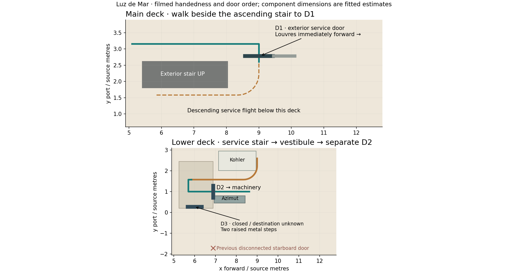
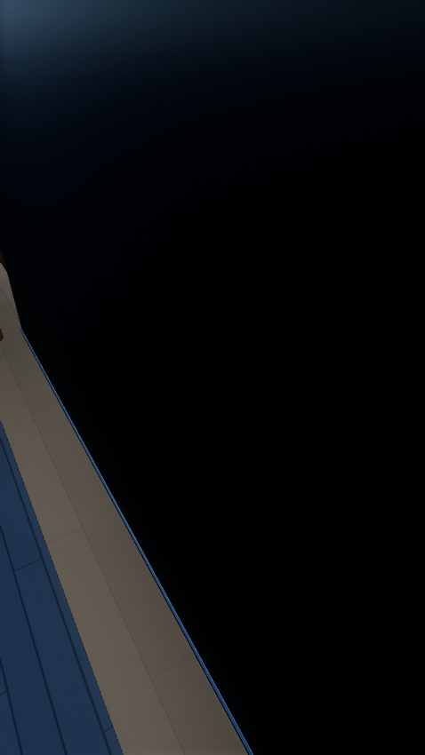
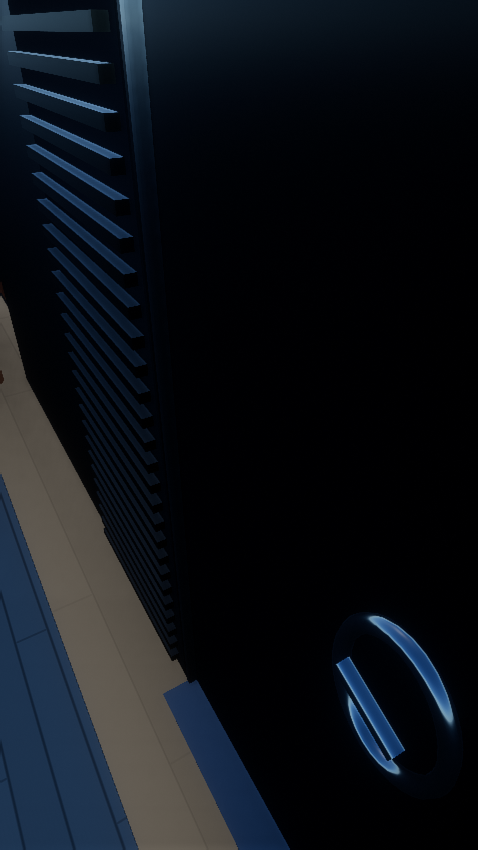
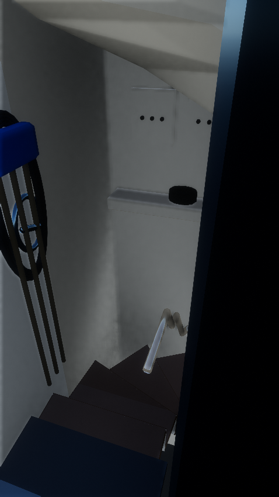
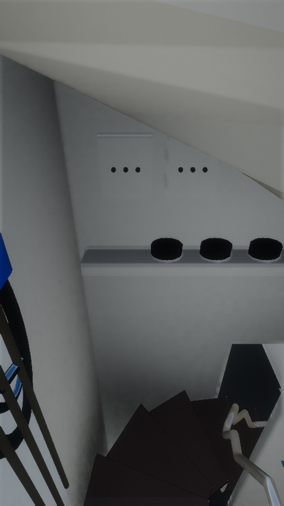
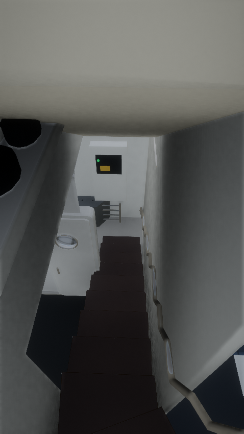
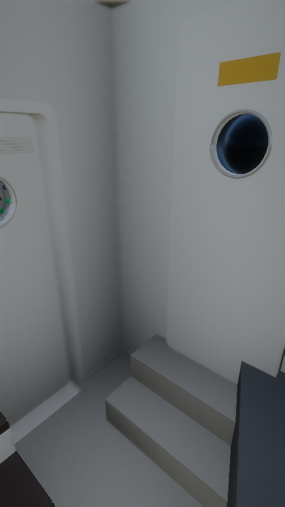
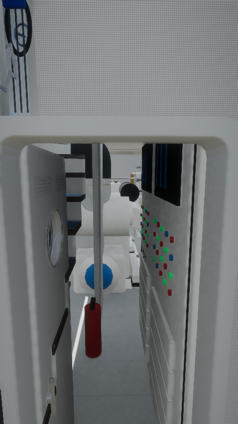
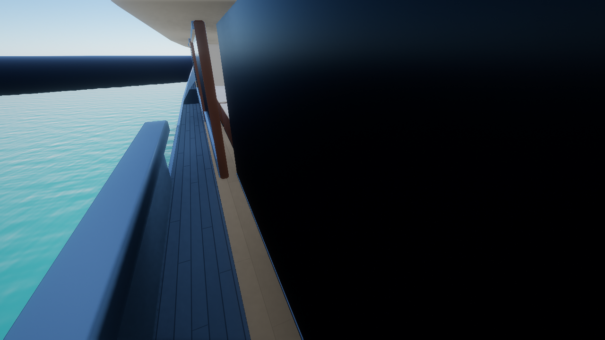
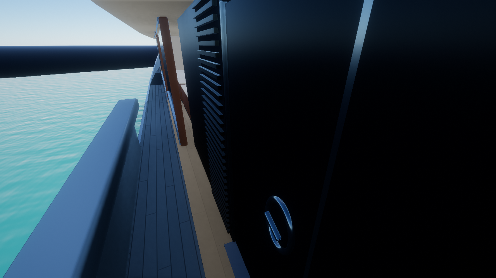

Luz de Mar · service entrance
The exterior entrance is on the inboard/right wall of the port passage, after walking beside the black ascending stair. Its tall horizontal louvres are immediately forward. Open this dark door, turn right down the wood stair and enter the lower vestibule. The separate white porthole door D2 leads into machinery. The raised door D3 stays closed.
Start beside the exterior entrance → · Walk from the dock →
Press E or tap the nearby door button to open D1. Descend to the vestibule and use E or the button again for D2. “Explorar” → “Principal” → “Acceso al cuarto de máquinas” selects the exterior entrance.
Captures use production yacht geometry/materials, lake, GTAO, TAA and ACES in an isolated native Vulkan scene. They omit the full Rocha scenery. Original video framing is approximate. Dimensions, tread count and concealed structural fit are estimates; this is not a surveyed reconstruction. Small fittings and control-panel legends remain approximate. D3’s destination is unverified.
Connected route

Exterior door · aft of the louvres

Before · blank sidewall
After · operable entranceD1 open · compact service landing

Turn toward the winders

Enclosed descent

D2 left, raised D3 right

Open D2 · Azimut on the right

Exterior entry · desktop view

Before · blank sidewall
After · operable entranceChecks and cost
Complete keyboard/touch round trip, both door guards, all four retained stairs, 13 yacht test files and 1,515 stair headroom samples pass. Both doors restore their GPU inputs exactly on closing.
| Yacht geometry | Before | After |
|---|
| Triangles | 170,345 | 177,846 |
| Geometry bytes | 8,034,790 | 8,372,400 |
13 yacht batches + 2 boarding batches. No new textures, lights or reflection passes. Water, resolution and AA unchanged. Detailed validation and limits